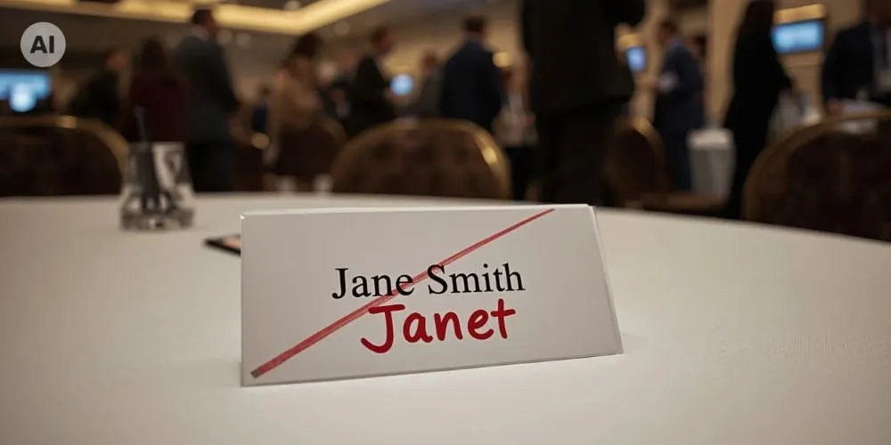

Dr. Rosa Sala
CEO von Nubart
Warum KI-Dolmetschsysteme Namen auch nach der Vorbereitung noch falsch wiedergeben

Unsere Kunden für Nubart TRANSLATE, unser KI-Simultandolmetschsystem für Live-Veranstaltungen, schicken uns ihre Programme, Präsentationen und Rednerlisten. Unser Team verwendet diese Unterlagen, um die KI auf die jeweilige Veranstaltung vorzubereiten. Trotzdem erhalten wir gelegentlich nach einer Veranstaltung eine Nachricht mit einer Frage wie dieser: „Der Firmenname stand doch in meinen Folien, die ich euch geschickt hatte. Warum hat die KI ihn dann falsch wiedergegeben?“ Das ist eine berechtigte Frage. In vielen Fällen liegt der Fehler bereits vor der eigentlichen Übersetzung: Das System hat etwas anderes erkannt als das, was der Redner tatsächlich gesagt hat. Als Konferenzdolmetscherin kenne ich diese Schwierigkeit nur zu gut. Ein Name, den man im Programm schwarz auf weiß liest, kann ganz anders klingen, wenn ihn jemand schnell und laut ausspricht. In diesem Artikel erklären wir die drei Schritte des KI-Dolmetschprozesses, bei denen Fehler mit Namen auftreten können, und zeigen, wie die Vorbereitung Ihrer Unterlagen dabei hilft, sie zu vermeiden.
Drei Schritte, drei mögliche Fehlerquellen bei der Wiedergabe von Namen
Beim KI-Dolmetschen arbeiten drei Systeme nacheinander. Zunächst hört die Spracherkennung dem Redner zu und wandelt das Gesprochene in Text um. Anschließend übersetzt eine Übersetzungs-Engine diesen Text – jeweils in kurzen Abschnitten. Zum Schluss gibt eine synthetische Stimme die Übersetzung wieder. Nubart TRANSLATE stellt alle Übersetzungen sowohl als Audio als auch in Textform bereit.
-
1. Spracherkennung wandelt das Gesprochene in Text um Typischer Fehler: Der Name wird falsch erkannt
-
2. Übersetzung übersetzt den Text Abschnitt für Abschnitt Typischer Fehler: Der Name wird falsch übersetzt
-
3. Sprachsynthese gibt die Übersetzung laut wieder Typischer Fehler: Der Name wird falsch ausgesprochen
Fehler bei Namen können in einer dieser drei Phasen auftreten. Je nachdem, in welcher Phase der Fehler entsteht, ist eine andere Lösung gefragt. Wenn ein Kunde uns mitteilt, dass ein Begriff falsch wiedergegeben wurde, denkt er in der Regel an die Übersetzung. Wir hingegen denken aufgrund unserer Erfahrung aus hunderten von Veranstaltungen zuerst an die „Transkription“. Unsere erste Frage lautet deshalb immer: Was hat die Spracherkennung tatsächlich erkannt? Wenn sie das falsche Wort transkribiert hat, hat die Übersetzungs-Engine den richtigen Begriff nie zu Gesicht bekommen.
Wenn das System etwas anderes hört
Nehmen wir den Firmennamen „Accenture“, ausgesprochen von einem deutschen Redner während eines Vortrags auf Deutsch. Wenn der Name in den Unterlagen vorkommt, bereitet unser Team die Spracherkennung gezielt darauf vor. Im Grunde geben wir dem System folgende Anweisung: Wenn du etwas hörst, das ungefähr wie „aksentür“, „axentür“ oder „aksentschur“ klingt, ist wahrscheinlich „Accenture“ gemeint. Transkribiere den Namen also als „Accenture“. So erhält die Übersetzungs-Engine den korrekten Namen in der Transkription und kann ihn bei der Übersetzung unverändert übernehmen.
Was aber, wenn ein Redner den Namen unerwartet ausspricht – zum Beispiel eher wie „Achsentür“? Das klingt zufällig wie ein deutsches Wort: eine Achsentür (was auch immer das sein mag!). Wenn diese Aussprachevariante nicht zu den vorbereiteten Varianten gehört, könnte die Spracherkennung tatsächlich „Achsentür“ transkribieren. Die Übersetzungs-Engine übersetzt dann dieses Wort ganz korrekt als „axle door“.
Die Übersetzung stimmt also – aber sie übersetzt das falsche Wort.
Ähnlich verhält es sich mit Personennamen. Ein französischer Name wie „Thibaut“ kann ganz unterschiedlich klingen, je nachdem, ob ihn jemand auf Englisch, Spanisch oder Deutsch ausspricht. Wir bereiten die wahrscheinlichsten Aussprachevarianten vor. Doch es ist unmöglich, jede denkbare Aussprache vorherzusehen – bei all den unterschiedlichen Akzenten und Sprechgeschwindigkeiten. Nach unserer Erfahrung mit Nubart TRANSLATE gehen etwa drei Viertel aller Fehler darauf zurück, dass die Spracherkennung nicht korrekt erfasst, was der Redner gesagt hat.
Auch die Forschung kommt zu ähnlichen Ergebnissen. Eine Studie zur Wiedergabe von Personennamen in der Sprachübersetzung zeigte, dass solche Systeme Schwierigkeiten mit Namen haben. Bei Systemen, die das Gesprochene zunächst transkribieren und anschließend den Text übersetzen, entsteht ein Großteil der Fehler bereits bei der Spracherkennung (Gaido et al., 2022). Eine weitere Untersuchung aus dem Jahr 2024 testete Sprachübersetzungssysteme anhand von Namen in aufgezeichneten Vorträgen. Eine Liste der zu erwartenden Namen zur Verfügung zu stellen, verbesserte die Ergebnisse. Dennoch erkannte selbst das beste System noch etwa jeden achten Namen einer Organisation nicht korrekt (Awiszus et al., 2024). Die Systeme konnten dabei die gesamte Aufzeichnung auf einmal verarbeiten. Beim Live-Dolmetschen hingegen müssen Entscheidungen in Echtzeit getroffen werden. Beide Studien bestätigen, was wir auch bei der Auswertung unserer eigenen Transkriptionen beobachten.
Wenn ein seltener Name wie ein geläufiger klingt
Ein zweiter Fall ist etwas schwieriger. Nehmen wir an, bei einer Veranstaltung geht es um zwei Personen mit den Nachnamen „Hahn“ und „Haan“. Beide Namen werden im Deutschen gleich ausgesprochen, bezeichnen aber unterschiedliche Personen. Beide Schreibweisen sind in den Sprachdaten vertreten, mit denen das System vorbereitet wurde. Wenn die Aussprache keinen Hinweis darauf gibt, welcher Name gemeint ist, neigt die Spracherkennung dazu, die geläufigere Schreibweise „Hahn“ zu wählen.
Eine gezielte Vorbereitung kann dem System helfen, auch den selteneren Namen „Haan“ korrekt zu erkennen. Wir können ihm jedoch nicht einfach vorgeben, jede entsprechende Aussprache als „Haan“ zu transkribieren. Schließlich wird bei derselben Veranstaltung auch ein Herr Hahn erwähnt. Besonders häufig tritt diese Art von Verwechslung bei Namen mit identischer Aussprache, aber unterschiedlicher Schreibweise auf. Auch kurze Abkürzungen und Namen, die wie ganz gewöhnliche Wörter klingen, können davon betroffen sein.
Wenn das Wort richtig erkannt wurde
Manchmal transkribiert die Spracherkennung das richtige Wort, und der Fehler entsteht erst im nächsten Schritt.
Die Übersetzungs-Engine arbeitet normalerweise mit kurzen Textabschnitten und hat keinen umfassenden Überblick über das Gesprächsthema. Deshalb kann sie ein Wort mit mehreren Bedeutungen falsch übersetzen. Das deutsche Wort „Schalter“ kann beispielsweise je nach Zusammenhang „switch“ oder „counter“ bedeuten. Um solche Fehler zu vermeiden, erstellt unser Team einen kurzen Kontexttext über die Veranstaltung in der Sprache des Redners und stellt ihn der Übersetzungs-Engine zur Verfügung. Diese berücksichtigt den Kontext bei jedem Übersetzungsabschnitt – ähnlich wie ein Dolmetscher, der seine Vorbereitungsnotizen im Hinterkopf behält. Bei Begriffen, die immer auf eine bestimmte Weise übersetzt oder gar nicht übersetzt werden sollen, legt unser Team die entsprechenden Vorgaben für jede Zielsprache einzeln fest. Geht es beispielsweise um ein technisches Thema, wird „Schalter“ mit größerer Wahrscheinlichkeit als „switch“ und nicht als „counter“ übersetzt.
Der letzte Schritt betrifft die Sprachausgabe. Eine synthetische Stimme spricht fremdsprachige Namen nach den Lautregeln ihrer eigenen Sprache aus. So könnte beispielsweise eine englische Stimme den deutschen Nachnamen „Grünwald“ so aussprechen, dass ihn jemand, der mit der deutschen Aussprache vertraut ist, kaum wiedererkennen würde. Auch die Aussprache lässt sich manuell anpassen.
Eigennamen müssen je nach Art und Verwendungszweck unterschiedlich behandelt werden. Ein Firmenname wie „Accenture“ wird beispielsweise in allen Sprachen gleich geschrieben. Bei Städten kann sich der Name dagegen je nach Sprache unterscheiden: Aus „Köln“ wird im Englischen „Cologne“ – und das ist völlig korrekt. Personennamen behalten ihre Schreibweise, ihre Aussprache kann sich jedoch von Sprache zu Sprache ändern. Abkürzungen wiederum können wie ein Wort oder Buchstabe für Buchstabe ausgesprochen werden. Ein einfaches Glossar reicht deshalb selten aus, um alle Probleme zu lösen. Jeder Name braucht eine eigene Herangehensweise.
Bei den wichtigsten Namen recherchiert unser Team die Aussprache mithilfe des Internationalen Phonetischen Alphabets (IPA) und berücksichtigt dabei die Sprachen der Redner, die uns der Kunde bei der Auftragserteilung mitteilt. Etwa 60 % unseres Vorbereitungsprozesses sind automatisiert und basieren auf den Dateien, die der Kunde in sein passwortgeschütztes Kunden-Dashboard hochlädt. Entscheidungen wie diese trifft jedoch weiterhin unser sprachlich geschultes Team – nicht die KI.
Wörter, auf die das System nicht vorbereitet wurde – und warum mehr nicht immer besser ist
Die Vorbereitung kann sich nur auf das stützen, was in den Unterlagen steht. Taucht ein Name darin nicht auf, kann unser Team auch nicht wissen, dass er besonders behandelt werden muss. Dasselbe gilt für Unterlagen, die zu spät eintreffen. Manche Aspekte einer Veranstaltung lassen sich grundsätzlich nicht im Voraus vorbereiten, denn Live-Veranstaltungen sind von Natur aus unvorhersehbar. Bei einer Frage-und-Antwort-Runde weiß beispielsweise niemand, welche Fragen das Publikum stellen oder welche Namen in den Antworten fallen werden. Die besten Beiträge sind oft gerade diejenigen, die spontan und ungeplant entstehen. Ein menschlicher Dolmetscher steht vor derselben Herausforderung. Was das für Ihre Gäste und die Vereinbarung mit Ihrem Kunden bedeutet, erläutere ich im Artikel „Kann KI-Dolmetschen schwerwiegende Fehler machen?“.
Natürlich möchten viele Kunden am liebsten alles schicken: jedes Dokument, jede Begriffsliste, Hunderte von Seiten. In der Regel hilft das jedoch nicht weiter. Unser Team bereitet die Spracherkennung gezielt auf Wörter vor, bei denen tatsächlich ein Fehlerrisiko besteht, etwa Namen, Abkürzungen, eigens erfundene Produktnamen und ungewöhnliche Schreibweisen. Gewöhnliche Wörter lassen wir bewusst außen vor, denn eine zu lange Liste kann die Erkennung anderer geläufiger Wörter beeinträchtigen, die ähnlich klingen. Auch der Kontexttext für die Übersetzungs-Engine ist aus gutem Grund in seiner Länge begrenzt: Er wird bei jedem Übersetzungsabschnitt mitgeschleppt, und ein zu umfangreicher Kontext kann die Übersetzungsqualität verschlechtern. Zu einer guten Vorbereitung gehört deshalb nicht nur die Entscheidung, was aufgenommen wird, sondern auch, was besser weggelassen wird. Dasselbe Phänomen beschreibe ich im Zusammenhang mit umfangreichen Begriffslisten im Artikel „Was Sie vom KI-Dolmetschen im Vergleich zum menschlichen Dolmetschen erwarten können“.
Die Vorbereitung der KI ist nicht dasselbe wie ihr Training
Manche Kunden gehen davon aus, dass die KI ihre Terminologie lernt und sich mit jeder Veranstaltung verbessert. Doch so funktioniert es nicht. Beim Training eines KI-Modells geht es darum, es mit riesigen Datenmengen zu füttern, damit es daraus lernt. Das ist zwar grundsätzlich möglich, gehört aber nicht zu dem, was wir für einzelne Veranstaltungen leisten, und wäre dafür auch unverhältnismäßig aufwendig und teuer. Stattdessen bereitet unser Team bereits existierende Modelle gezielt auf die jeweilige Veranstaltung vor. Das lässt sich mit der Vorbereitung eines menschlichen Dolmetschers vergleichen: Er verfügt bereits über das nötige Wissen und die erforderlichen Fähigkeiten (das "Modell" ist bereits in seinem Kopf), muss sich aber noch mit dem Thema der Veranstaltung vertraut machen.
Das hat zwei wichtige Konsequenzen. Erstens werden Ihre Unterlagen ausschließlich für Ihre Veranstaltung verwendet. Die Inhalte Ihrer Veranstaltung werden nicht zum Training von KI-Modellen genutzt, und unseren Partnern ist dies vertraglich untersagt. Zweitens verbessert sich das System nicht einfach dadurch, dass es zuhört. Eine Präsentation vor der Veranstaltung mehrmals der Ki-Übersetzung laut vorzulesen, verbessert das Ergebnis also nicht. Jede Veranstaltung wird auf Grundlage ihrer eigenen Unterlagen vorbereitet.
Was Sie tun können – und was passiert, wenn ein Begriff falsch wiedergegeben wurde
Laden Sie in Ihrem Kundenbereich alles hoch, was Sie auch einem menschlichen Dolmetscher zur Verfügung stellen würden: das Programm, die Präsentationsfolien, die Biografien der Redner und die Produktinformationen. Unser Team weiß, worauf es bei der Vorbereitung ankommt, und kümmert sich darum. Achten Sie darauf, dass die Namen der Redner, der Produkte und des Veranstaltungsortes irgendwo in den Unterlagen auftauchen. Ein eigenes Glossar müssen Sie nicht erstellen. Falls bestimmte Namen oder Begriffe auf eine bestimmte Weise übersetzt oder ausgesprochen werden sollen, genügt eine kurze Liste mit diesen Angaben. Schicken Sie uns die Unterlagen möglichst frühzeitig, denn die Vorbereitung der KI braucht Zeit. Materialien, die erst wenige Stunden vor Veranstaltungsbeginn eintreffen, können möglicherweise nicht mehr berücksichtigt werden.
Falls bei Ihrer Veranstaltung ein Begriff falsch wiedergegeben wurde, teilen Sie uns bitte mit, welches Wort Sie erwartet hätten, ungefähr wann es gesagt wurde und, falls zutreffend, in welchem Raum. Sofern Sie nicht die sofortige Löschung Ihrer Veranstaltungsdaten gewählt haben, können wir die Transkription überprüfen und feststellen, in welcher der drei Phasen der Fehler aufgetreten ist. So lässt sich feststellen, ob das Problem bei der Spracherkennung, der Übersetzung oder der Sprachausgabe lag. Die Erkenntnisse daraus können wir bei der Vorbereitung Ihrer nächsten Veranstaltung berücksichtigen.
Wenn Sie ganz sichergehen möchten, können Sie auch einen Test mit einer speziell auf Ihre Veranstaltung vorbereiteten KI anfordern. Bei dieser kostenpflichtigen Option bereitet unser Team das System anhand Ihrer Unterlagen vor, und Sie können es 30 Minuten lang ausprobieren. Sollten einzelne Wörter trotz der Vorbereitung noch nicht korrekt erkannt, übersetzt oder ausgesprochen werden, geben Sie uns Bescheid. Unser Team kümmert sich dann erneut darum. Eine Überarbeitungsrunde ist im Preis inbegriffen.